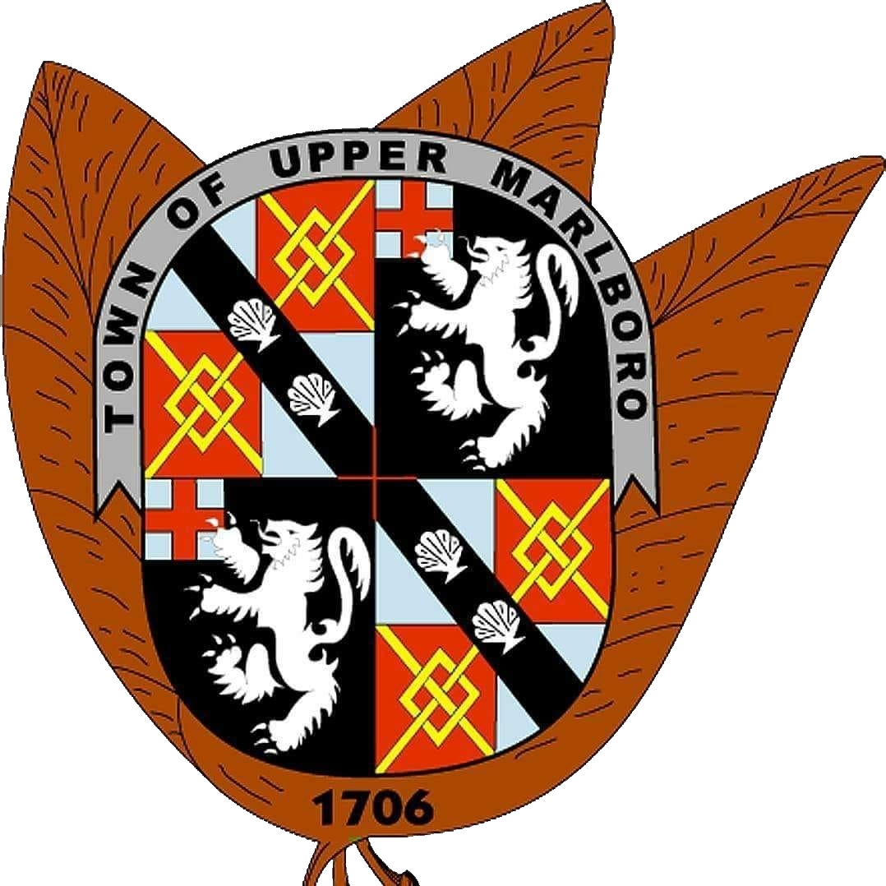
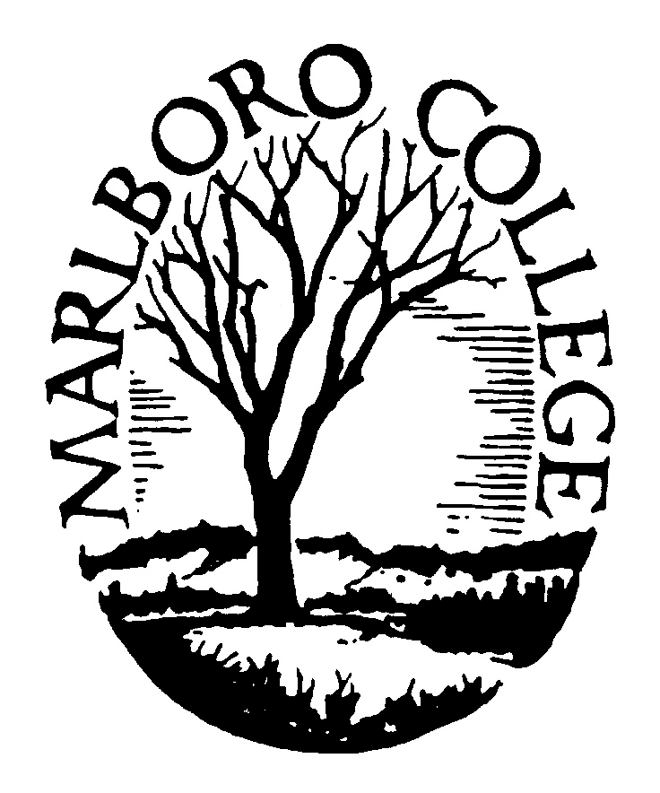
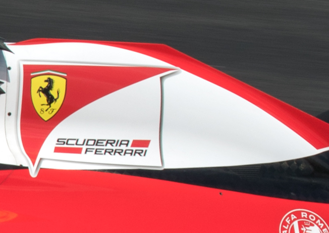
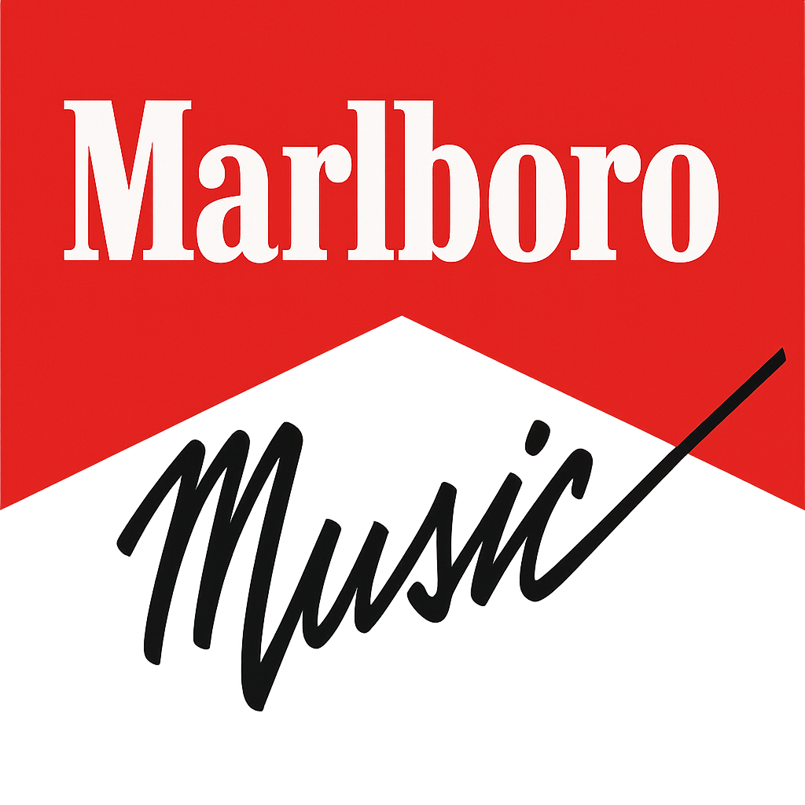

말보로 Marlboro
말보로(Marlboro)는 필립 모리스가 1924년 도입한 미국의 담배 브랜드이다.
최종 업데이트

말보로는 어떤 브랜드인가
말보로는 1924년 미국 필립모리스가 선보인 담배 브랜드다. 초기엔 '5월처럼 순하게'를 내건 여성용 고급 담배였으나, 1954년 광고인 레오 버넷이 만든 카우보이 '말보로맨'을 앞세워 남성 필터 담배로 전환하며 출시 1년 만에 미국 4위로 올라섰다.
현재 세계에서 가장 많이 팔리는 담배로, 미국 시장 점유율 40%대를 유지하고 브랜드 가치는 약 326억 달러에 이른다. 1972년 세계 판매 1위에 오른 뒤 글로벌 표준 담배 자리를 지키고 있다.
말보로는 어떻게 봐야 할까
말보로의 핵심 강점은 단일 브랜드 하나로 미국 차상위 9개 담배를 합친 것보다 큰 규모를 유지한다는 점이다. 카멜·뉴포트 같은 경쟁 브랜드가 특정 세대나 멘솔에 의존한 것과 달리, 말보로는 카우보이 신화를 통해 자유·남성성·미국적 야성이라는 상징 자본을 쌓아 가격 프리미엄을 정당화했다.
다만 1999년 이후 미국 담배 광고 규제와 흡연 인구 감소로 본업이 위축되자, 모회사 필립모리스 인터내셔널은 가열식 무연 제품 아이코스로 무게중심을 옮겼고 2023년 아이코스 매출이 마침내 말보로를 추월했다. 한국에서는 2017년 아이코스가 진입하며 전용 스틱을 말보로 이름으로 출시했고, 토종 KT&G의 릴·핏과 경쟁하면서도 일부 협업하는 독특한 구도를 형성했다.
본업의 정점에서 무연 전환을 주도해야 하는 역설이 말보로가 처한 최대 과제다.
말보로는 어떻게 시작되고 성장했나
말보로라는 이름은 런던 말버러 거리(Great Marlborough Street)에 있던 필립모리스 공장에서 유래했다. 1924년 미국에 도입된 초기 말보로는 호텔·리조트에서 팔리던 여성용 고급 담배로, 립스틱 자국을 가리는 붉은 필터 띠와 '마일드 애즈 메이'라는 문구를 썼다.
1950년대 들어 흡연과 폐암의 연관성이 알려지자 업계는 더 안전해 보이는 필터 담배로 이동했고, 필립모리스는 여성용 이미지를 과감히 버렸다. 1954년 광고대행사 레오 버넷에 의뢰해 거친 카우보이가 등장하는 '말보로 컨트리'를 창조했고, 당시 여성적으로 여겨지던 필터 담배를 남성의 상징으로 뒤집었다.
이 캠페인은 판매를 폭발시켜 1년 만에 브랜드를 전국 4위로 끌어올렸고, 1972년에는 세계 판매 1위 담배에 올랐다. 이후 필립모리스 인터내셔널을 통해 180여 개국으로 확장하며 글로벌 표준 담배로 자리 잡았다.
말보로의 브랜드 아이덴티티는 무엇인가
말보로의 시각 정체성은 흰 바탕 위 굵은 빨강 삼각형, 이른바 '레드 루프(쉐브론)'와 두꺼운 산세리프 워드마크로 압축된다. 강렬한 적색과 직선적 형태는 힘·속도·정복의 인상을 주며, 카우보이가 표상한 자립과 개척 정신을 브랜드 가치로 내세운다.
핵심 타깃은 본래 도시의 남성 흡연자였고, 브랜드 보이스는 설명을 줄인 채 광활한 서부 풍경과 침묵하는 인물로 메시지를 전하는 절제된 톤이다. 포뮬러원 페라리 후원 등 모터스포츠와의 오랜 결합도 이 속도·남성성 이미지를 강화해 왔다.
말보로의 대표 제품과 서비스는 무엇인가
제품군은 정통 강배합 말보로 레드를 정점으로, 골드(구 라이트)·미디엄·실버(울트라 라이트)·블루 등 타르 단계별 라인으로 구성된다. 한국 편의점 기준 일반 궐련은 한 갑 4,500원대에 유통되며, 가열식 아이코스 전용 스틱도 말보로 이름으로 함께 판매된다.
아이코스 본체는 한국 출시 당시 약 12만 원, 전용 스틱은 갑당 4,300원대로 책정됐고, 2024년에는 일루마용 센티아 라인이 추가됐다. 유통은 편의점·면세점 등 합법 소매 채널을 따른다.
말보로는 지금 어떤 상태인가
말보로의 미국 내 판매와 소유는 알트리아 그룹 산하 필립모리스 USA가 맡고, 미국 외 전 세계 판권은 필립모리스 인터내셔널(PMI)이 보유한다. 2008년 두 회사가 분리되며 시장이 나뉘었다.
2024년 PMI 순매출은 약 379억 달러, 알트리아 순매출은 약 240억 달러였다. 말보로의 미국 담배 시장 점유율은 2024년 약 41%, 브랜드 가치는 약 326억 달러로 집계됐다.
본사는 PMI가 스위스 슈타인하우젠, 알트리아가 미국 버지니아주 리치먼드에 있다.
말보로 연혁 — 주요 사건은 언제였나
말보로 로고는 어떻게 변해왔나
대표 로고대표 브랜드 마크
BI/CI 아카이브보관 이미지 1
BI/CI 아카이브 2보관 이미지 2
BI/CI 아카이브 3보관 이미지 3
BI/CI 아카이브 5보관 이미지 5자주 묻는 질문
말보로는 어느 나라 브랜드인가요?
말보로는 미국의 식음료 브랜드입니다.
말보로는 언제 설립되었나요?
말보로는 1924년 설립되었습니다.
말보로의 브랜드 아이덴티티는 무엇인가요?
말보로의 시각 정체성은 흰 바탕 위 굵은 빨강 삼각형, 이른바 '레드 루프(쉐브론)'와 두꺼운 산세리프 워드마크로 압축된다.
말보로의 대표 제품은 무엇인가요?
제품군은 정통 강배합 말보로 레드를 정점으로, 골드(구 라이트)·미디엄·실버(울트라 라이트)·블루 등 타르 단계별 라인으로 구성된다.
말보로는 어느 기업이 소유하고 있나요?
말보로의 미국 내 판매와 소유는 알트리아 그룹 산하 필립모리스 USA가 맡고, 미국 외 전 세계 판권은 필립모리스 인터내셔널(PMI)이 보유한다.
말보로의 공식 웹사이트는 어디인가요?
말보로의 공식 웹사이트는 https://www.marlboro.com/ 입니다.
출처와 검증
말보로 관련 참고: 공식 웹사이트 · 위키데이터 Q15075 · 한국어 위키백과 · 영어 위키백과. 브랜드명은 한글과 원어를 함께 표기하되 데이터에 없는 표기는 만들지 않습니다. 기원 국가·설립연도는 검수된 정의문에서 확인된 값을 우선하고, 없을 때만 공식 웹사이트 URL이 일치하는 위키데이터 개체의 값을 씁니다. 위키데이터 값은 2026-09-07 기준입니다.